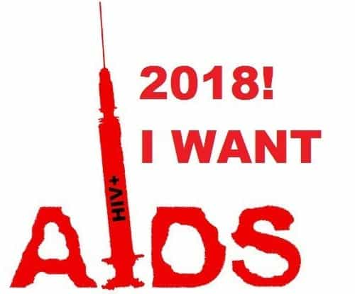

Since the 1990s, the mass media and liberal opinion have refused to portray the GLBT community as anything but wonderful. Unfortunately, writing a moral blank check has consequences. Overwrought compassion can be deadly.
This limitless tolerance passively enables negative behaviors. One is bugchasing—deliberately seeking HIV infection, sometimes by enthusiastic “gift givers”. It’s a fringe gay practice, but why it’s a practice at all is bewildering. They of all people should know to avoid it like the plague.
How prevalent is this?

This one actually is pretty tame.
Some might consider it exceedingly rare, or even disbelieve that this happens. Unfortunately, it’s real. Like all things bizarre, there’s a Tumblr account for that. One Twitter user calls himself “Bug Chasing Teen“, apparently also a fan of hard drugs. (Warning: both have disturbing images.) Bugchasing dating sites exist too. A much more sensible gay guy related the following:
I have recently come into contact with a number of people on Grindr and Scruff who have been asking me to “poz” them. My reactions have ranged from disgust, anger, hurt, and confusion and I’ve either hastily blocked the person, or sent a harshly worded reply. But recently I took myself out of my own head and decided to question the motives of a pretty persistent guy who had initially asked me to…
I won’t traumatize you with the rest of that.
A San Francisco Weekly writer listed some personals relating–in language too graphic to repeat—the desire to get HIV or infect others. Researching this, he created a fake bugchasing profile on Grindr and struck out. However, he got over 100 messages on Bareback Real Time, including invitations to “conversion parties”. Damn! How many straight guys looking for normal stuff get even half that much attention on dating apps?
Bugchasing seems another of countless nonsensical fetishes, once hardly imaginable until the Internet both proved they existed and became a breeding ground. However, the consequences obviously are worse than other bizarre kinks such as (for instance) tentacle porn. Nobody really knows how many people caught HIV deliberately, or are currently seeking to get infected, or to infect others.
Motivations
What’s more incomprehensible is why anyone would want HIV. Reasons may include:
- A rite of passage into the gay community
- No longer needing to practice safe sex, because they’re already infected
- The thrill of risky behavior, like playing Russian Roulette for funsies
- Attention-seeking, similar to Munchhausen Syndrome
- Sex addiction
- Self-destructive tendencies
- Rejection of society’s norms, basically rebellion for its own sake
Ultimately, those who delight in breaking the rules will find that the rules break them.
Some might create a genealogy for the illness—who pozzed him, who infected the last guy, etc.—rather like a family tree. Terminology such as “impregnation” and “breeding” is also telling. If they’re seeking family life, isn’t that what gay marriage and gay adoption were for? It’s rather strange—homosexual advocacy has been promoted since 1950, but now that they have widespread acceptance, things have become more neurotic than ever.
A closer look reveals varying levels of commitment. Some actively desire to catch/spread HIV. Others are oblivious if they do so. Some consider it fun to think about, but sensibly don’t actually participate. The rest have an unknown range of behavior. The worst are “gift givers” falsely claiming to be negative
Such recklessness isn’t unprecedented. Randy Shilts documented the AIDS epidemic’s early days. Gaetan Dugas—once considered “Patient Zero”—stubbornly kept pozzing neg-holes (as they’d put it these days) even after being confronted with the facts. Otherwise, Shilts found much indifference and denial even in the gay community while the plague spread.
Furthermore, San Francisco bathhouse owners resisted mandates to post safe sex information. (It’s strange that they didn’t care if all their customers died.) When this was ineffective, they fought closure by the Health Department tooth and nail. The decision greatly was delayed by politicians not wanting to offend the “anything goes” crowd.
Nonsense upon stilts

New antiviral therapies (developed at great expense) have given some in the gay community a feeling that HIV is just a manageable disease. However, it’s still incurable. Although some of the drugs are now generic, treatment costs are ruinous.
There are those who say people should be free to do whatever they want with their bodies. Why not let idiots be idiots? Like many libertarian arguments, it sounds great in the realm of pure theory, but the devil’s in the details. The greatest challenge is actually holding people to the consequences of their own choices. In practice, when people do inherently risky things, society usually has to bail them out.
For example, a woman who gets herself pregnant from a hookup will be supported by welfare. Also, injured drunk drivers aren’t denied medical care. Likewise, those who catch HIV will be able to get it treated, no matter how they got it. They might be insured, which increases everyone else’s costs. If not, the fallback option is government healthcare. Otherwise, they’ll simply show up in the ER whenever they get sick. One way or another, their mistakes are paid for by other people.
Many would regard it as inhumane not to help people even if they’ve made some mistakes. Actually, all that worked surprisingly well, back when society had better moral standards, and people exercised basic due diligence in running their own lives. However, deliberately getting infected with an incurable illness that’s often fatal but completely preventable is one step too far. Trying to get sick goes far beyond membership in a high-risk group.
Silence is death

The truth isn’t always politically correct.
Bugchasing and “gift giving” have been an observable trend since the 1990s. It’s about time society stops passively condoning this. Although what they’re doing is objectively degenerate, I’m not coldly indifferent. I really hate to see young guys making irreversible mistakes like this, catching an illness that sucks the life out of its victims slowly. They’ll regret it profoundly as soon as they come to their senses, but by then it’s too late.
This deadly practice must stop being one more dirty little secret of the gay community. Willful obliviousness by liberal opinion is a lousy form of compassion. Society should start taking a tougher line. In some jurisdictions, knowingly exposing someone to HIV already is a crime. This should be applied everywhere, and treated as an attempted murder. That’s what it is.
Likewise, there should be laws addressing the other side of the equation too. Specifically, those self-identifying as bugchasers—or are demonstrated to have deliberately exposed themselves to the virus—should lose insurance benefits and public health services related to HIV treatment. They can go pay full price for their drug cocktails and other medical care, and eventually earn a Darwin award on their own dime.
Likely this won’t catch too many people, since many of them go by online screen names. (“Bug Chasing Teen” didn’t provide his real name, for instance.) Still, it would give them something to think about at least. Granted, there would be endless shrieking about society trampling on their “rights”. However, when they try to argue that, their recklessness and faulty reasoning will be obvious to everyone.
Read More: The Truth About AIDS & Heterosexual Transmission